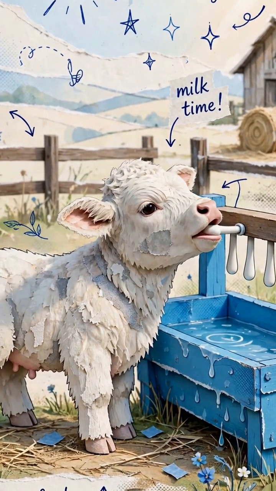
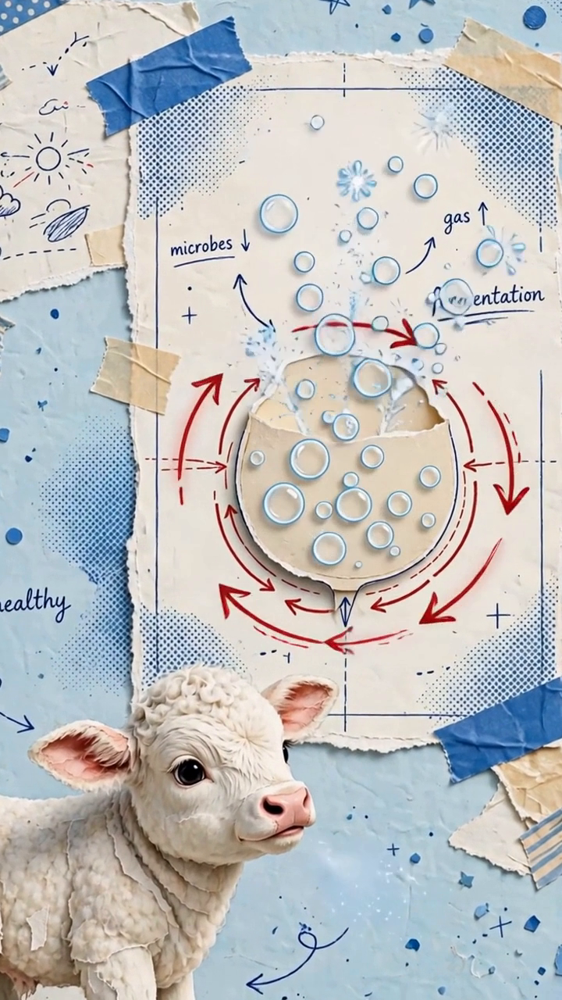

NEVER A
LOW BUCKET
A HIDDEN SWITCH
IN ITS THROAT

WHERE DOES MILK GO?
STOMACH #1
DIGESTING
HEAD UP
SWITCH SHUT
SKIPS STOMACH #1
STOMACH #1
DIGESTING
HEAD DOWN
LOW BUCKET ✗

MILK GOES SOUR
STOMACH #1
DIGESTING
BLOAT
TEATS AT
NURSING HEIGHT
WARM ✓
COLD ✗
COLD = SCOURS
HEAD UP.
MILK WARM.
NEVER A LOW BUCKET.
Never feed a
calf from a
low bucket. A
calf has a
hidden switch in
its throat that
decides where the
milk goes. Head
up, sucking like
it's nursing, the
switch snaps shut.
The milk skips
the first stomach
and goes straight
to digestion. Head
down at a
bucket, the switch
can stay open.
The milk spills
into the first
stomach, goes sour,
and the calf
bloats. So the
teats sit at
nursing height, and
the milk goes
in warm. Cold
milk upsets the
gut and brings
on scours.